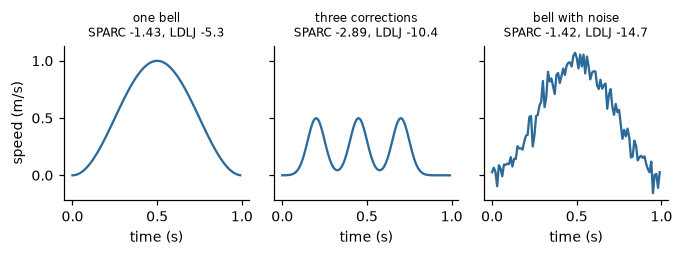

Smoothness#
A smooth movement is continuous and well coordinated, made of one flowing action without hesitations or corrections; a non-smooth one is jerky, interrupted or made of several attempts. Smoothness is one of the properties of movement that observers perceive most readily, and it is a component of the quality that is called fluidity in movement analysis and in the study of expressive movement [6, 10]. The metrics for it come from research on motor control, and are now used for movement in general [14].
No single number is the smoothness of a movement: the metrics below capture different aspects, and they do not rank
movements in the same way. This page defines the six features of the family and says what each one measures:
SpectralArcLength, LogDimensionlessJerk,
Harmonicity, SubmovementCount,
CurvatureDispersion and CurvatureVelocityCorrelation. The
symbols are those of Notation, units and conventions.
What is a smooth movement#
The reference of the smoothness metrics is the point-to-point reach of a healthy adult: the hand moves from one position to another along a nearly straight path, with a speed profile \(v(t)\) that has one bell-shaped peak, rising from zero, reaching a maximum in the middle of the movement and falling back to zero. The ideal bell shape is the one that minimises the squared jerk over the movement [citation needed] (minimum-jerk model of reaching movements, Flash and Hogan). A movement that is made of several parts, with an interruption between them, has a speed profile with several peaks, called sub-movements; tremor and measurement noise add small oscillations on top. Two properties follow, and the metrics are built on them:
the frequency content of a smooth speed profile is concentrated at low frequencies, while a profile with corrections or tremor has a longer tail at high frequencies;
the jerk, the derivative of the acceleration, is small for a smooth profile and large for an interrupted one.
A third group of metrics looks at the path instead of the speed profile: when a hand follows a curve, it slows down where the curve bends, so that curvature and speed are negatively related in a smooth movement.
The speed profile of a movement is not available directly from a motion capture or a sensor: it has to be derived from the
position, and differentiating amplifies noise. The four metrics of the speed profile take the speed as an input and do not
filter it; compute it with Kinematics (Kinematics and energy), which smooths and
differentiates in one step, or smooth it beforehand.
The four metrics of the speed profile#
Four features take the speed of a point (or, for one of them, its acceleration) as a stream of scalars, keep a window of
the last \(N\) samples and compute a metric of the last full window, every \(H\) samples. They share the constructor
parameters window (60 samples by default, at least 10), hop (1 by default) and sampling_rate, which is required,
because the window carries no time axis of its own. The timestamp of a call only labels the result: it does not enter the
computation. Their statuses are WARMING_UP until 10 samples have arrived, NO_OUTPUT between two windows when \(H > 1\), and
INVALID_INPUT for a value that is not finite or for a profile that cannot support the measure (a constant or null speed, for
the first two).
Spectral arc length#
The spectral arc length (SPARC) measures the length of the amplitude spectrum of the speed profile [14]. Let \(V(f)\) be the magnitude of the Fourier transform of the (zero-padded) speed of the window, normalised to its maximum, \(\hat{V}(f) = V(f) / \max_f V(f)\). Then
the negative of the length of the curve \(\hat{V}\) over the band \([0, f_c]\), with the frequency also normalised by the
cut-off \(f_c\). A smooth profile has a spectrum that is a single peak at low frequencies and a short curve; a profile with
several peaks or with tremor has a spectrum with extra peaks and a longer curve. The cut-off is adaptive: the highest
frequency at which \(\hat{V}\) is still above amplitude_threshold (0.05 by default), limited to the interval from
minimum_cutoff_frequency (2 Hz) to maximum_cutoff_frequency (20 Hz). The adaptation makes the measure independent of
the amplitude and of the duration of the movement, which is the reason for its use. The value is dimensionless and negative:
the closer to 0, the smoother the movement. It depends on the zero-padding and on the cut-off choice, so compare windows of the
same length and with the same parameters.
Log dimensionless jerk#
The jerk is the rate of change of the acceleration, and its squared integral grows with the amplitude and the speed of the movement and decreases with its duration. The dimensionless jerk divides it by a combination of the duration \(T\) of the window and the peak speed \(v_{\max}\) that removes the dimensions, and the log dimensionless jerk (LDLJ) takes the negative logarithm [14, 15]:
where the derivatives are taken by finite differences. With input_mode="acceleration" the input is the magnitude of the
acceleration, the jerk is its first difference, and the normalisation uses the duration and the peak of the acceleration
(LogDimensionlessJerk.from_acceleration). The measure is dimensionless and negative, closer to 0 for a smoother movement, and
a flat signal gives 0. It is the more sensitive of the two to noise, because it differentiates twice: filter the speed first.
Harmonicity#
A smooth ballistic movement has one peak of speed, and a repeated movement alternates peaks and valleys.
Harmonicity compares the number of peaks of the speed in the window with the number of sign
changes of its gradient, the turning points of the speed. It is 1 when peaks and valleys alternate regularly, as in a single
bell-shaped profile or in a regular oscillation, and lower when the speed has turning points that do not belong to that
pattern; a maximum at the border of the window is not counted as a peak. The measure is dimensionless and lies in \([0, 1]\).
Unlike SPARC and LDLJ it does not compare the movement with a reference shape: it says whether the peaks and the valleys
are regular.
Sub-movements#
A simple reaching movement has one speed peak, and corrections and hesitations add further peaks, the sub-movements.
SubmovementCount counts the peaks of the speed in the window whose prominence is at least
prominence_factor (0.1 by default) times the maximum of the window, and which are separated by at least 100 ms (that is
why the sampling rate is needed). The output is an integer, 0 or more, and 0 for a speed that is below \(10^{-6}\) throughout.
A smoother movement has fewer sub-movements.
An example#
Three speed profiles of one second, sampled at 100 Hz, show the metrics at work: one bell-shaped peak, three separate peaks, and the bell with measurement noise added. One window holds the whole movement.
>>> from pyeyesweb.low_level import SpectralArcLength, LogDimensionlessJerk, Harmonicity, SubmovementCount
>>> rate = 100.0
>>> time = np.arange(100) / rate
>>> bump = lambda centre, width, height: height * np.exp(-0.5 * ((time - centre) / width) ** 2)
>>> profiles = {
... "one bell": np.sin(np.pi * time) ** 2,
... "three corrections": bump(0.2, 0.05, 0.5) + bump(0.45, 0.05, 0.5) + bump(0.7, 0.05, 0.5),
... "bell with noise": np.sin(np.pi * time) ** 2 + np.random.default_rng(1).normal(scale=0.08, size=100),
... }
>>> metrics = {"SPARC": (SpectralArcLength, "spectral_arc_length"), "LDLJ": (LogDimensionlessJerk, "log_dimensionless_jerk"),
... "harmonicity": (Harmonicity, "harmonicity"), "sub-movements": (SubmovementCount, "submovement_count")}
>>> for name, speed in profiles.items():
... values = {label: round(float(getattr(cls(window=100, sampling_rate=rate).run(speed), output)[-1]), 2)
... for label, (cls, output) in metrics.items()}
... print(f"{name:18s}", values)
one bell {'SPARC': -1.43, 'LDLJ': -5.25, 'harmonicity': 1.0, 'sub-movements': 1.0}
three corrections {'SPARC': -2.89, 'LDLJ': -10.45, 'harmonicity': 1.0, 'sub-movements': 3.0}
bell with noise {'SPARC': -1.42, 'LDLJ': -14.67, 'harmonicity': 1.0, 'sub-movements': 4.0}

The single bell is the smoothest by both measures. The corrections lower SPARC from \(-1.43\) to \(-2.89\) and the LDLJ from \(-5.25\) to \(-10.45\), and the count finds the three peaks. In this example the measurement noise leaves the spectral arc length nearly unchanged, but it lowers the LDLJ strongly, from \(-5.25\) to \(-14.67\), since the second derivative of the noise is large, and it adds spurious peaks to the count. The two metrics answer different questions, and the choice between them is a choice of what to be sensitive to.
The two metrics of the path#
Two features take the path of the point instead of its speed profile.
Curvature and speed#
A hand that follows a curve slows down where the curve bends, and speeds up where it straightens. For a smooth movement the
curvature \(\kappa\) and the speed \(v\) are therefore negatively correlated, and the correlation is a smoothness index
[5]. In a window of the trajectory,
CurvatureVelocityCorrelation smooths and differentiates the samples by a Savitzky-Golay
filter [citation needed] (Savitzky and Golay), which gives the velocity \(v_k\) and the curvature \(\kappa_k\) at every sample
\(k\) of the window, and its smoothness output is by default their Pearson correlation,
strongly negative for a smooth movement. It takes a trajectory of one, two or three channels, one sample per call, and
needs the sampling rate. The outputs also hold the per-sample curvature and velocity of the window and their standard
deviations. The filters keep their history between windows, so consecutive windows share \(N - H\) samples, and the status is
WARMING_UP while the first window fills and for the first window after it, because the filters need a previous window
(smoothness is then NaN). A null movement
gives INVALID_INPUT. The default correlation_type="pearson" is the coefficient above; "simplified" is a simplified
index of the original block, capped at upper_limit. Corrected in the core: the curvature used half of the second
derivative of the fit.
An ellipse traced at constant angular speed slows down at the ends of its long axis, where the curvature is largest, and the correlation is strongly negative:
>>> from pyeyesweb.low_level import CurvatureVelocityCorrelation
>>> time = np.arange(300) / 100.0
>>> ellipse = np.c_[2 * np.cos(np.pi * time), np.sin(np.pi * time)]
>>> feature = CurvatureVelocityCorrelation(window=100, hop=100, sampling_rate=100.0)
>>> round(float(feature.run(ellipse).smoothness[-1]), 2)
-0.94
Curvature dispersion#
CurvatureDispersion is a curvature-based index of a movement that relates how much the path
bends to the distance that the point travelled over the last window calls (50 by default). It is computed from the
velocity and the acceleration vectors of the point, from which the feature derives the curvature \(\kappa\) and the arc
length \(\lVert\mathbf{v}\rVert \, \Delta t\) of each call, keeps both over a ring of window calls, and returns one
dimensionless value per call, from the first call on. The index is 1 while the movement is slower than movement_threshold:
a point at rest has no smoothness to measure. A path with curvature 0 everywhere, a perfectly straight one, has no finite
index and gives INVALID_INPUT. The empty entries of the rings weigh in until they have filled, so the first window
values are not comparable with the later ones. Corrected in the core: every call now adds the speed times the time step to
the arc length (above and below the threshold). This index was the smoothness output of Kinematics in earlier versions.
The velocity and the acceleration come from two Kinematics features with the same filter parameters and time rule, one for
each, with output_dims="components":
>>> from pyeyesweb.low_level import CurvatureDispersion, Kinematics
>>> time = np.arange(200) / 100.0
>>> circle = np.c_[np.cos(2 * np.pi * time), np.sin(2 * np.pi * time)] # a circle of radius 1 m
>>> velocity = Kinematics(output_type="velocity", output_dims="components", sampling_rate=100.0)
>>> acceleration = Kinematics(output_type="acceleration", output_dims="components", sampling_rate=100.0)
>>> feature = CurvatureDispersion(window=50, sampling_rate=100.0)
>>> for point in circle:
... result = feature.process(velocity.process(point).velocity, acceleration.process(point).acceleration)
>>> round(float(result.curvature_dispersion), 2)
0.06
How to read the outputs#
Feature |
Output |
Unit |
Smoother means |
Range |
|---|---|---|---|---|
|
|
none |
closer to 0 |
negative |
|
|
none |
closer to 0 |
negative; 0 for a flat signal |
|
|
none |
closer to 1 |
\([0, 1]\) |
|
|
none |
lower |
integer, 0 or more |
|
|
none |
closer to \(-1\) |
\([-1, 1]\) for |
|
|
none |
see the example |
1 below the movement threshold |
The metrics are dimensionless and independent of the unit of the data, which makes them comparable between movements of different size and speed, but a value is only meaningful relative to the same metric on a comparable movement: the absolute numbers depend on the parameters (the cut-off of SPARC, the duration of the window) as the text above says.
Practical notes#
What a window holds. The metrics describe the movement in the window. For one reach the window should contain the whole movement, from the start to the end: a window that cuts the movement in the middle measures the cut. For a continuous movement, windows of the length of the phrase that you want to describe give a time series of smoothness. With the default of 60 samples at 100 Hz the window is 0.6 s.
Sampling rate. The four speed metrics need
sampling_rateand raiseValueErrorat construction without it. The jerk-based metric needs a sampling rate high enough to resolve the movement, and the cut-offs of SPARC (2 to 20 Hz by default) must lie below the Nyquist frequency \(f_s / 2\).Noise. Differentiation amplifies noise. Smooth the speed or compute it with
Kinematics; the noise sensitivity of the metrics differs, as the example shows.Several metrics. Report more than one when the movement is not a single reach: SPARC and the count of sub-movements say different things about a movement with several parts.
From a skeleton. The usual chain is skeleton,
Kinematics(speed of a joint), one or more of the metrics above and, to get a value for each gesture, the segmentation of Gesture segmentation.
Further reading#
The definitions and the comparison of the metrics: [14]. Their computation from inertial sensors: [15]. The curvature-velocity index and the motion qualities of impulsivity and smoothness: [5]. Fluidity as a perceived quality: [6].